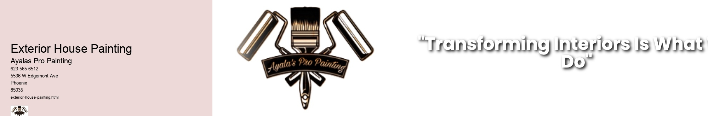

News
Interior House Painting
Interior House Painting
Color Selection and Psychology
Paint Types and Finishes
Exterior House Painting
Kitchen Painters
Exterior House Painting
Exterior House Painting
Weatherproofing and Durability
Surface Preparation Techniques
Professional Painting Services
Professional Painting Services
Cost Estimation and Pricing Structures
Licensing Insurance and Certifications
About Us
Contact Us

Exterior House Painting
Painting the exterior of a house is an endeavor that not only revitalizes its appearance but also provides protection against environmental elements. The process involves meticulous preparation, selection of suitable materials, and execution with precision to ensure longevity and aesthetic appeal.
Preparation is the cornerstone of a successful painting project. Before any color graces the walls, one must thoroughly clean the surface to remove dirt, grime, or peeling paint. Pressure washing is often employed for this task. Next comes scraping away any loose paint followed by sanding to create a smooth substrate for new paint to adhere. It's imperative to repair cracks or holes in the siding with filler or caulking to prevent moisture intrusion which could lead to decay.
Selecting the right paint is equally critical. High-quality exterior paints resist fading, chalking, cracking, and mildew growth. They typically contain additives that improve weather resistance and durability. A homeowner should choose a color that complements their home's architecture and blends harmoniously with the surrounding environment.
The actual application of paint demands patience and skill. Professional painters will often use both brushes and rollers for different surfaces; intricate trim work requires smaller brushes while broad expanses are covered more efficiently with rollers or even sprayers in some cases. Multiple coats may be necessary for optimal coverage and color richness.
Finally, timing plays a pivotal role in exterior painting projects. Conditions should be dry with moderate temperatures; extreme heat can cause paint to dry too quickly while cold can prevent proper curing. Most importantly, there should be no precipitation expected soon after completion as rain can wash away uncured paint resulting in wasted effort and resources.
In conclusion, exterior house painting is a significant investment in maintaining property value and curb appeal. Through careful preparation, judicious material selection, skilled application, and proper timing, homeowners can expect beautiful results that will stand the test of time.
Paint Types and Finishes
Check our other pages :
Kitchen Painters
Color Selection and Psychology
Paint Types and Finishes
Surface Preparation Techniques
Cost Estimation and Pricing Structures
Frequently Asked Questions
What is the best time of year to paint the exterior of a house?
The best time to paint the exterior of a house is during dry, warm weather, typically in late spring, summer, or early fall. Temperatures should be above 50°F for oil-based paints and above 40°F for latex paints during painting and drying.
How often should I repaint the exterior of my home?
The frequency depends on factors like climate, previous paint quality, and surface material. On average, its recommended every 5-10 years for wood siding, every 15-20 years for vinyl siding, and stucco may need repainting every 5-6 years.
How do I choose the right type of paint for my house exterior?
Consider your local climate and the surface material youre painting. Latex (acrylic) paints are popular due to their durability and ease of clean-up. Oil-based (alkyd) paints are good for high-touch areas because theyre tougher but take longer to dry.
How much does it typically cost to have my house exterior painted by professionals?
The cost varies based on size of the home, type/quality of materials used, labor costs in your area, number of coats needed, and complexity (height/detailing). On average, homeowners spend between $1.50 - $4 per square foot.
Do I need to do any prep work before painters arrive?
Yes. Preparing will ensure better results and faster completion. Remove shutters, downspouts if possible; trim bushes/trees away from walls; wash surfaces to remove dirt/mildew; repair damages like rot or cracks; prime bare wood surfaces; remove loose or peeling paint.
Exterior House Painting